.png)
Bienvenido al Informe de Sublimagic
Este informe detalla el proceso completo de concepción, desarrollo y lanzamiento de la plataforma
web de Sublimagic, un dinámico emprendimiento enfocado en la sublimación creativa y la personalización
de productos únicos. La necesidad de esta nueva presencia digital es estratégica: buscamos potenciar la marca en
el entorno online, optimizar radicalmente la experiencia del usuario y ofrecer un espacio profesional y seguro.
Este nuevo sitio permitirá a los clientes no solo explorar nuestro catálogo completo, sino también comprender
nuestro proceso de personalización y realizar sus pedidos de forma ágil y transparente. La web es ahora el centro
de operaciones de Sublimagic
Además, esta página sirve como evidencia del trabajo académico y práctico,
integrando investigación, diseño, desarrollo web y el uso de inteligencia artificial.
2. Justificación
La necesidad de una página web surge porque Sublimagic requería un espacio digital más organizado
que permitiera mostrar sus productos y servicios con claridad. Las redes sociales limitaban la forma
de presentar el catálogo y no ofrecían una navegación estructurada.
Con el sitio web se logra una plataforma más profesional, visualmente coherente y con una estructura clara.
Esto mejora la confianza del cliente, fortalece la marca y facilita el acceso a toda la información.
La imagen anterior muestra los contenidos principales que estructuran la página web. Incluye secciones como inicio, productos, personalización, blog, galería, contacto y compras. Este esquema permitió planificar adecuadamente la arquitectura del sitio y asegurar que la navegación fuese intuitiva para los usuarios.
3. Objetivos del Proyecto
Objetivo General
Diseñar y desarrollar una página web profesional, estética y funcional que represente fielmente la identidad de Sublimagic.
Objetivos Específicos
- Crear un diseño visual coherente con la marca.
- Organizar la información en secciones claras y accesibles.
- Implementar una navegación fácil y dinámica.
- Agregar contacto directo vía WhatsApp para pedidos.
- Aplicar IA y herramientas digitales modernas.
4. Metodología
Para el desarrollo de la página web de Sublimagic se implementó una metodología híbrida que combinó la planificación detallada con la adaptabilidad ágil.
5.1 Diseño Centrado en el Usuario (UX/UI) Se inició con el análisis de las necesidades del público objetivo para crear una Arquitectura de la Información lógica y un Diseño de Interfaz (UI) que fuera visualmente atractivo y coherente con la identidad de la marca. Se priorizó la facilidad de navegación y la claridad en el flujo de pedidos.
5.2 Prototipado Se utilizó un proceso de dos pasos para la validación visual y estructural:
Wireframing: Creación de bocetos de baja fidelidad para definir la distribución del espacio y la funcionalidad básica.
Mockups: Desarrollo de prototipos de alta fidelidad que integraron la paleta de colores, tipografías y elementos gráficos finales antes del inicio de la codificación.
9 5.3 Metodología Ágil (Iterativa) El proyecto se ejecutó en fases cortas e iterativas (ideación, diseño, desarrollo, pruebas), lo que permitió una mejora continua y la capacidad de integrar rápidamente la retroalimentación. Este enfoque garantizó un desarrollo eficiente y un producto final bien ajustado a los objetivos. 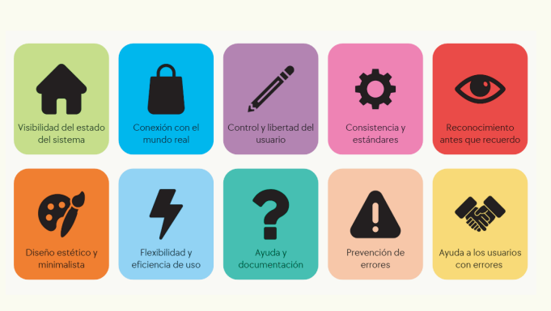HTML'">
5. Tecnologías Utilizadas
 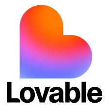CSS
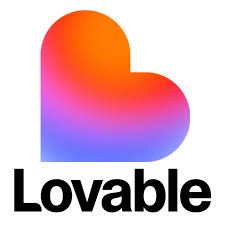CSS 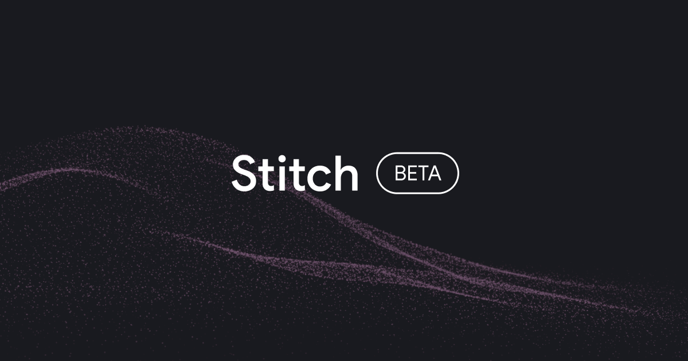Stitch'">
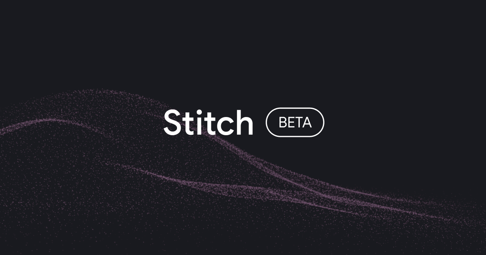Stitch'">

6. Desarrollo
Se organizaron secciones principales como Inicio, Catálogo, Personalización, Contacto y Blog. Se implementó un diseño suave, moderno y coherente.
10. Mapa del Sitio
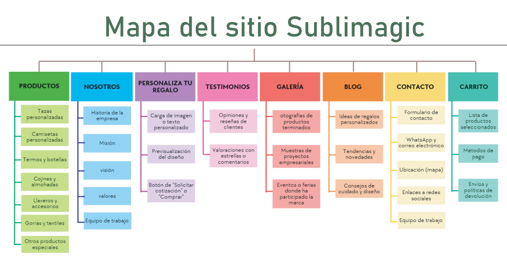Mapa no disponible'">7. Resultados
El sitio final logró mayor profesionalismo, claridad visual y confianza para los usuarios.
HTML'">


 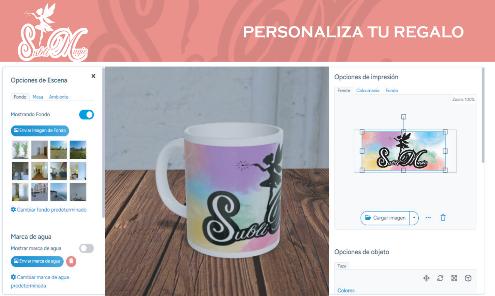Stitch'">
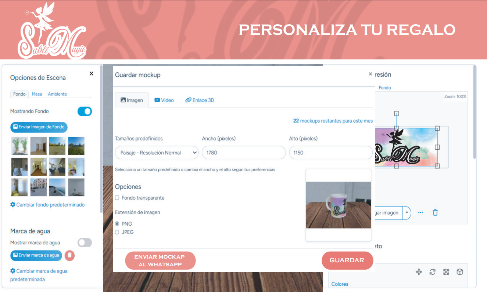Gemini'">
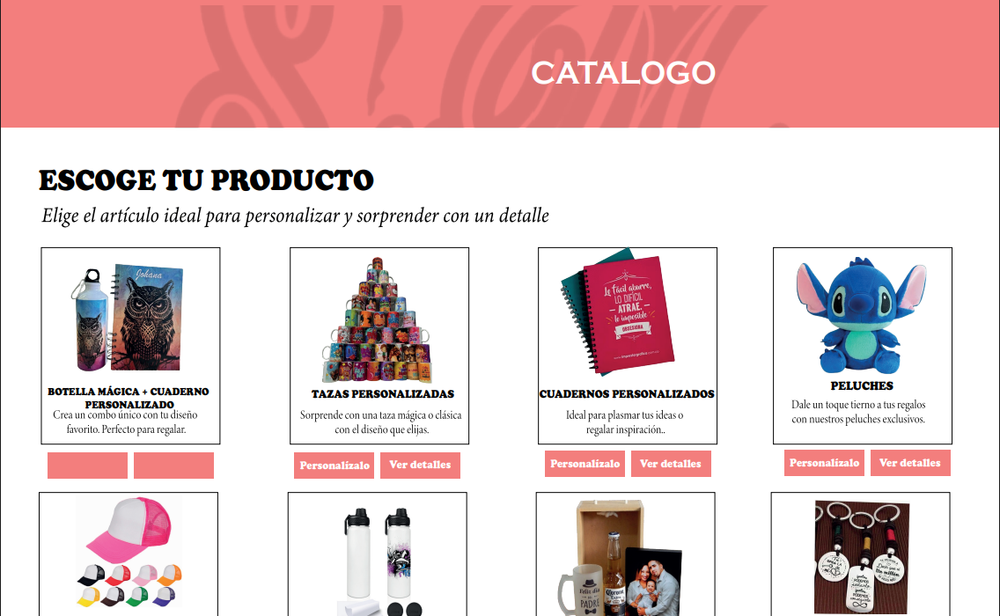Stitch'">
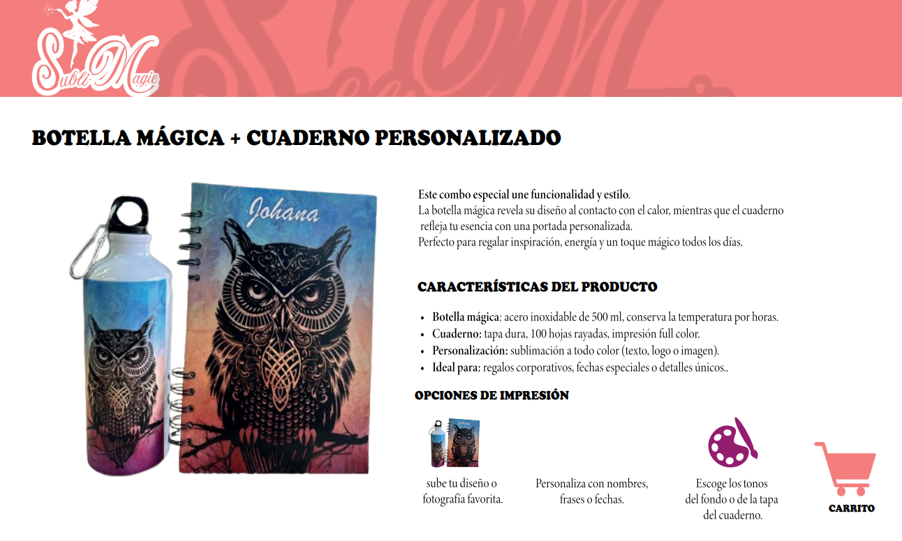Stitch'">
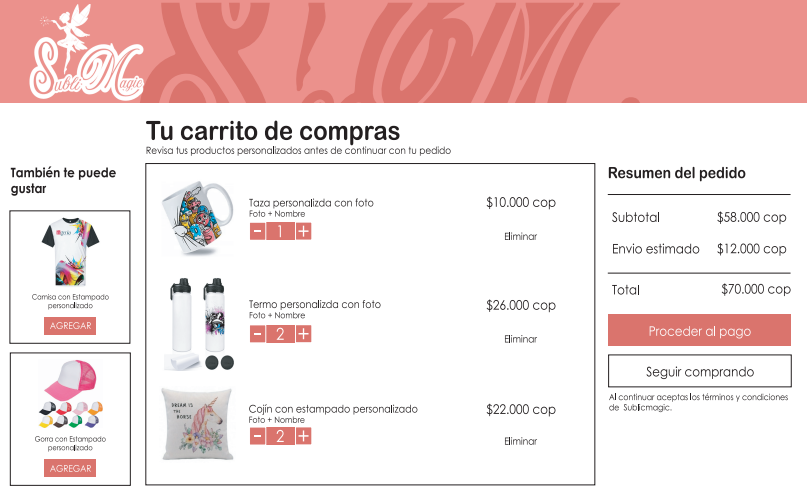Stitch'">
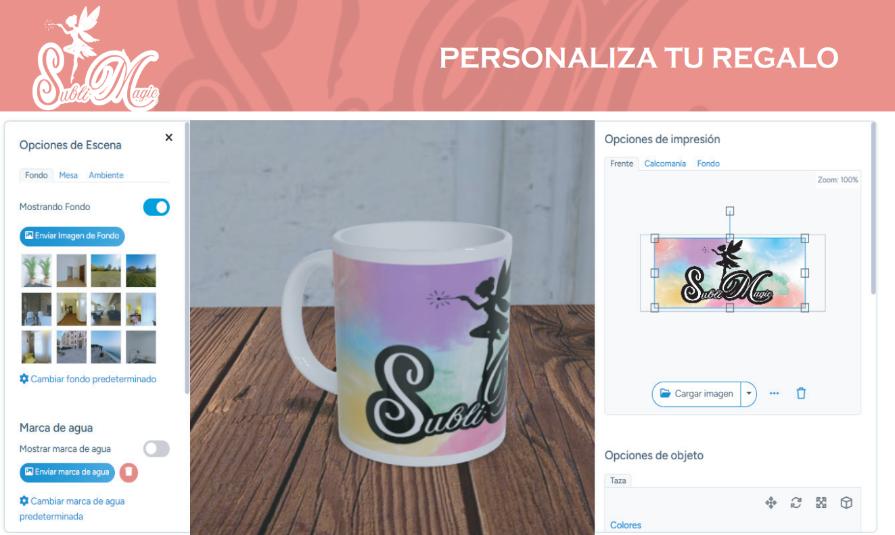Stitch'">
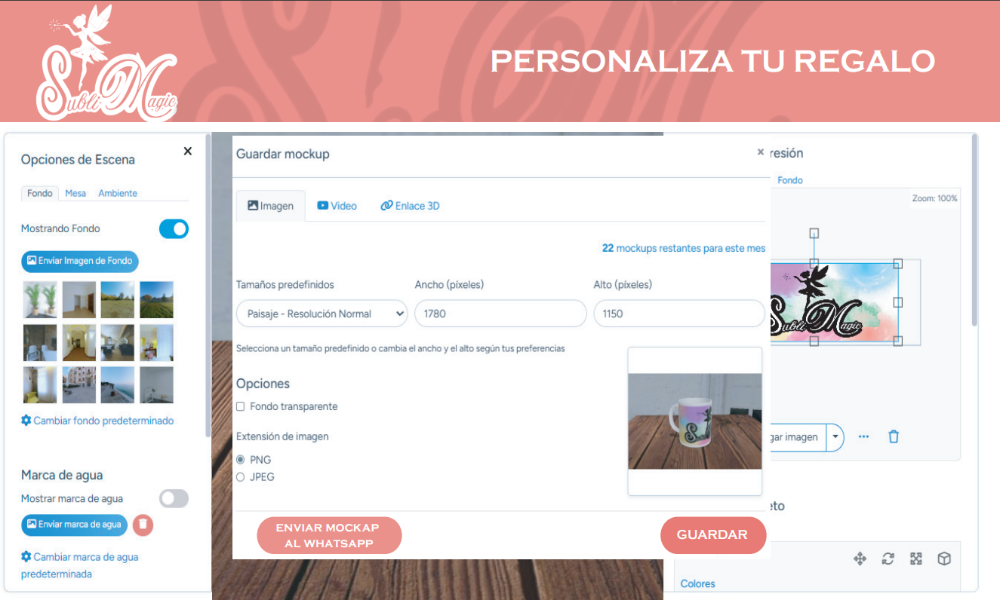Gemini'">
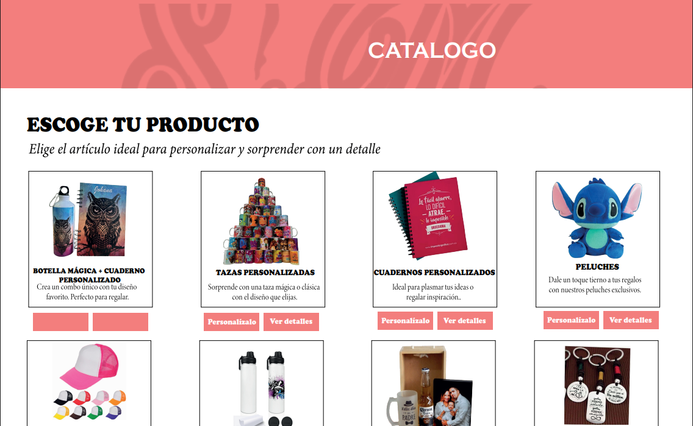Stitch'">
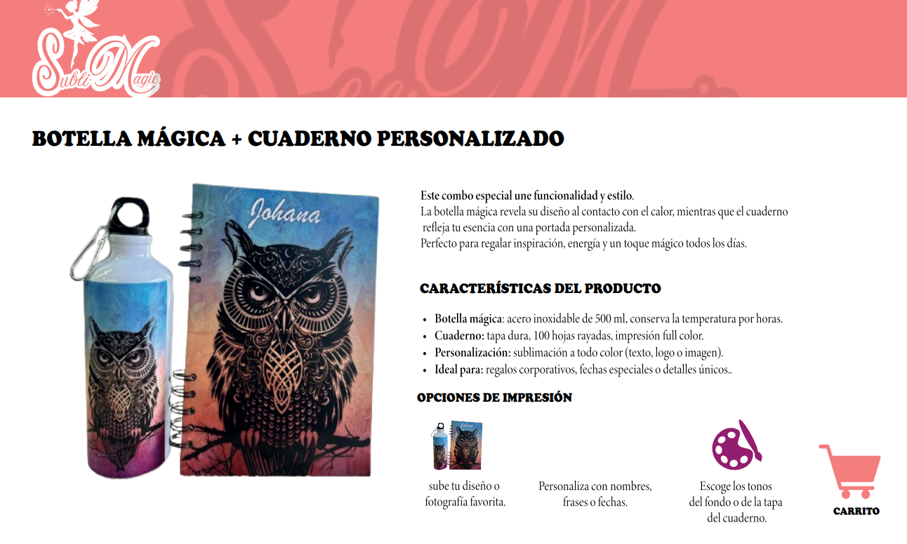Stitch'">
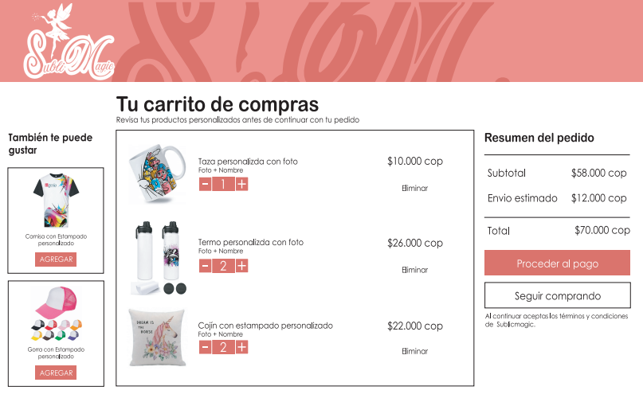Stitch'">
8. Conclusiones
9. Conclusiones Finales El proyecto de desarrollo de la página web de Sublimagic no solo cumplió con los objetivos planteados, sino que también demostró la eficacia de integrar metodologías modernas de diseño y programación con herramientas de Inteligencia Artificial. La implementación exitosa de la plataforma provee a Sublimagic de una base digital sólida, ofreciendo mayor visibilidad, un perfil más profesional y una experiencia de usuario optimizada que facilita la interacción y la solicitud de pedidos. Esta nueva herramienta se convierte en un recurso indispensable para el crecimiento estratégico del emprendimiento, permitiendo una mejor organización y posicionamiento en el mercado. Adicionalmente, el proyecto representó una oportunidad valiosa para el equipo desarrollador, permitiendo el refuerzo de habilidades clave en diseño centrado en el usuario, desarrollo web ágil y la aplicación práctica de IA para la optimización de contenidos.
9. Créditos
- Laura Rojas
- Mariana Angulo
- Karen Pinilla
- María Paula León
- Maik